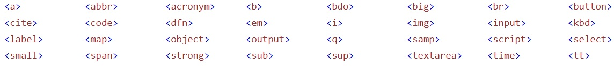
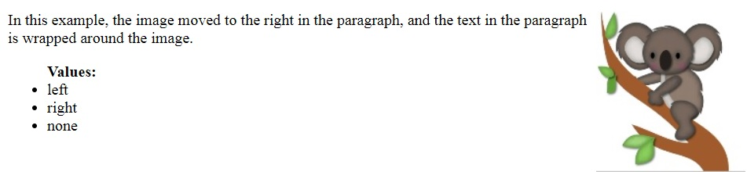
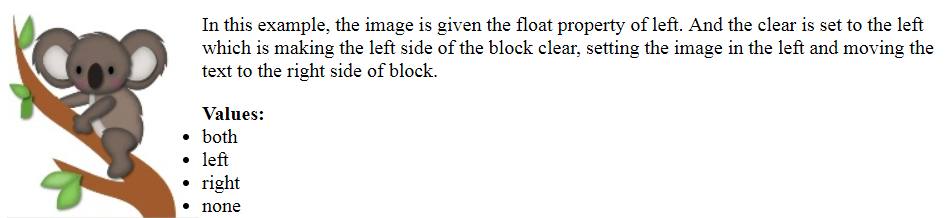
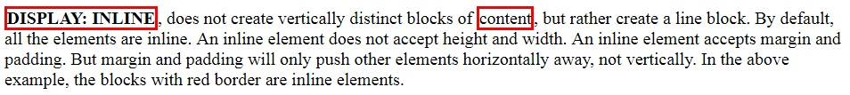
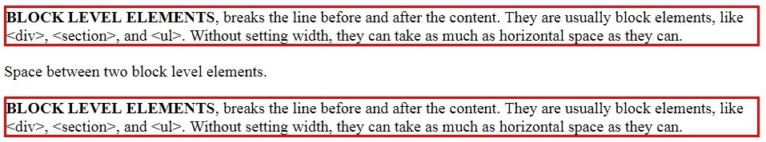

Block Level & Inline Elements
Block Level Elements:
An element that begins a new line on the web page and takes up the full available width horizontally, is called an BLOCK LEVEL Element. Block level elements can contain another block level and contain larger structures.
- <address>
- <article>
- <aside>
- <section>
- <header>
- <footer>
- ....

Inline Elements:
An element which can begin within the sentence and extends as much width is necessary, is called an INLINE Element. They can contain another inline elements.
- <label>
- <cite>
- <strong>
- <cite>
- <small>
- <img>
- ....

Floating & Clearing
Floating:
FLOATING is a CSS positioning property. It causes an element to move, allowing the adjacent content to fill in the available space. It changes the default flow of the elements. So, we can get rid of the wasted space on the page. The float property can have either of the following values:

Clearing:
CLEAR property is set on an element, to ensure it stays beneath the floated elements. The clear property is always matched with the float property. The clear property is always matched with the float property. The clear property can have one of the following values:

Display Properties
The DISPLAY properties in CSS determines the element's inner and outer display types. The outer display sets an element's role in the flow layout; the inner type sets the layout of child elements. The default value of all the elements is INLINE.
DISPLAY: INLINE, does not create vertically distinct blocks of content, but rather create a line block. By default, all the elements are inline. By default, all the elements are inline. An inline element does not accept height & width. An inline element accepts margin and padding. But margin and padding will only push other elements horizontally away, not vertically.

DISPLAY: INLINE-BLOCK, is similar to INLINE in which it will be in the inline with the natural flow of the text. The only differencs is that, in this height and width can be adjusted.

DISPLAY: BLOCK , breaks the line before and after the content. They are usually block elements, like <div>, <section>, and <ul>. Without setting width, they can take as much as horizontal space as they can.
